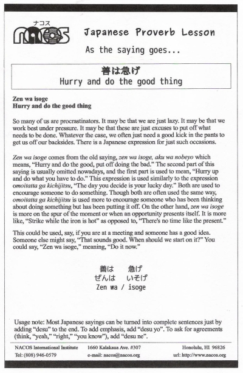

Zen wa isoge
Hurry and do the good thing
So many of us are procrastinators. It may be that we are just lazy. It may be that we work best under pressure. It may be that these are just excuses to put off what needs to be done. Whatever the case, we often just need a good kick in the pants to get us off our backsides. There is a Japanese expression for just such occasions.
Zen wa isoge comes from the old saying, zen wa isoge, aku wa nobeyo which means, “Hurry and do the good, put off doing the bad.” The second part of this saying is usually omitted nowadays, and the first part is used to mean, “Hurry up and do what you have to do.” This expression is used similarly to the expression omoitatta ga kichijitsu, “The day you decide is your lucky day.” Both are used to encourage someone to do something. Though both are often used the same way, omoitatta ga kichijitsu is used more to encourage someone who has been thinking about doing something but has been putting it off. On the other hand, zen wa isoge is more on the spur of the moment or when an opportunity presents itself. It is more like, “Strike while the iron is hot” as opposed to, “There's no time like the present.”
This could be used, say, if you are at a meeting and someone has a good idea. Someone else might say, “That sounds good. When should we start on it?” You could say, “Zen wa isoge,” meaning, “Do it now.”
Usage note: Most Japanese sayings can be turned into complete sentences just by adding “desu” to the end. To add emphasis, add “desu yo”. To ask for agreements (think, “yeah,” “right,” “you know”), add “desu ne”.

| © 1995-2013 NACOS International Institute. All Rights Reserved. |